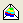

2つのZ列 (XYZZ) またはその部分範囲を選択します。
元データを選択し、
メニューのから作図 > 3D : 3Dカラーマップ三点曲面を選択します。
または、
3Dおよび等高線グラフツールバーの ボタンをクリックします。
(Originのプログラムフォルダにインストールされています。)
デカルト座標系による3Dグラフとは異なり、3D三点グラフには4つの軸があり、それらはX、Y、Z、Zhとなります。Zh軸は三角形の面とは垂直に交わります。同様に、4つの軸面、XY、YZh、ZhX、ZZhが存在します。
3Dカラーマップ三点曲面図がある時に作図の詳細イアログを開き（フォーマット：作図の詳細(プロット属性）と操作する）、作図形式を3D散布図/トラジェクトリ/ベクトルに変換すると、3D三点座標系内部に3D散布図を作図できます。また、レイヤ内容ダイアログから、既存の3D三点グラフに3D三点散布図を追加できます。
3Dカラーマップ三点曲面では、凡例に使用できるのは色スケールだけです。しかし、3D散布図では、他の凡例オブジェクト、例えばデフォルト凡例、カテゴリー値用凡例、1ポイントずつの凡例をグラフに追加できます。
3D三点散布図では、凡例の置換における列の属性シンタックスは X、Y、Z、Zhとなり、デフォルトでZhを使用します。